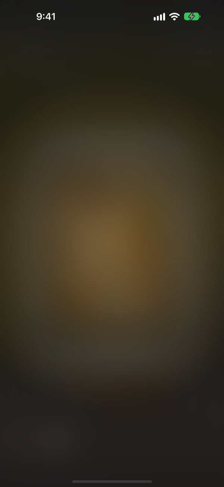
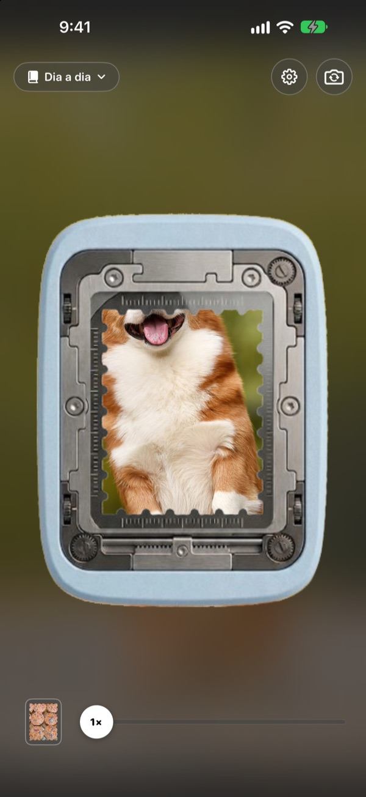
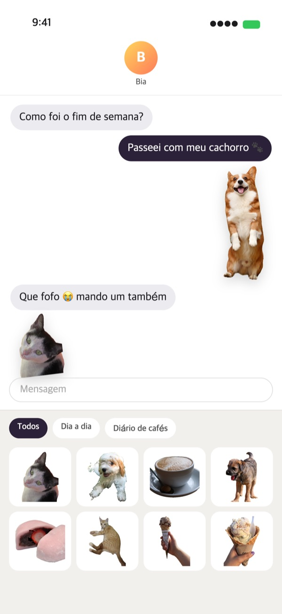
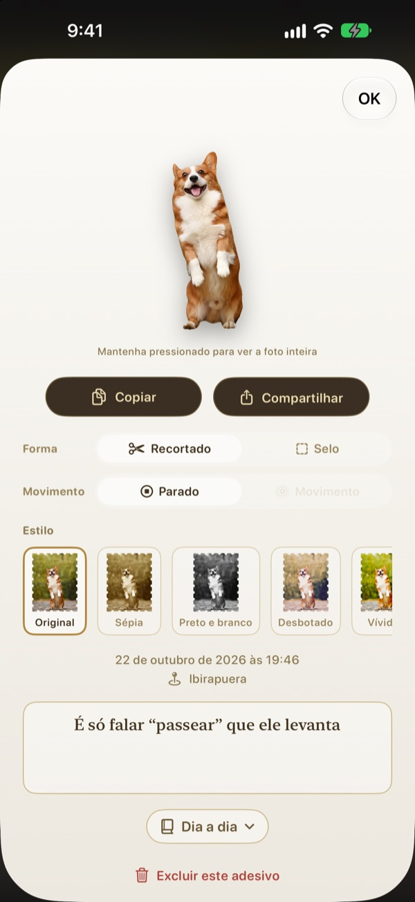
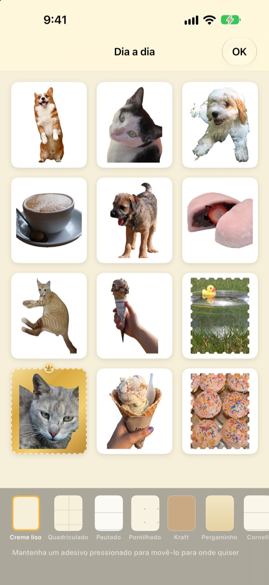

Segure,
e o momento vira adesivo
Enquadre a cena na janela do furador, segure e solte. Seu cachorro sai recortado no formato dele, com o breve movimento de antes e depois do toque. Dá para enviar na hora pelo Mensagens ou pelo teclado.
Todos os recursos são gratuitos. Seus adesivos e fotos ficam só no seu aparelho.

Destaque um você mesmo
Escolha uma cena, segure o botão do furador e solte. Depois, experimente outra forma e outro estilo.
Os momentos fofos ficam esquecidos na galeria
Você flagra seu cachorro de língua de fora. Para mandar como adesivo, precisa achar a foto, recortar e ainda abrir outro app de adesivos. Até lá, a conversa já mudou de assunto. O Punching destaca o adesivo na hora da foto e, assim que você guarda, ele já está na gaveta de adesivos do Mensagens.
O que importa recortado, a paisagem em selo
Se houver algo para recortar, como uma pessoa, um pet ou um objeto, você recebe só isso. Se não houver, como numa paisagem, sai um selo de borda serrilhada.
O breve movimento de antes e depois do toque vem junto, então o adesivo se mexe.

Direto no Mensagens e no teclado
Os adesivos destacados aparecem na gaveta de adesivos do Mensagens. Ative o teclado do Punching para escolher e colar também em outros apps.
Adesivos com movimento chegam se mexendo. Mantenha um adesivo pressionado para copiar e cole onde quiser.

Forma e estilo, mesmo depois
Troque quando quiser entre recortado e selo, entre movimento e imagem parada. A foto original fica guardada, então tudo continua nítido como na primeira vez, não importa quantas vezes você mude.
Escolha um estilo entre Original, Sépia, Preto e branco, Desbotado, Vívido e Ciano, e anote algumas palavras, a data e o lugar.

Junte em álbuns, imprima em papel
Crie um álbum para cada tema e escolha álbum por álbum também no Mensagens e no teclado. Escolha páginas como kraft, quadriculado, pautado ou pergaminho e organize a ordem do seu jeito.
Transforme um álbum em um PDF para imprimir com linhas de corte em forma de selo e imprima direto em papel adesivo.

Três passos para começar
- 1
Enquadre
Coloque o que você quer na janela no meio da câmera.
- 2
Segure e solte
O adesivo é destacado no instante em que você solta.
- 3
Guarde e envie
Adicione a um álbum e ele aparece na hora no Mensagens e no teclado.
Onde usar e onde mudar
- Mensagens
- ＋ ao lado do campo de texto ▸ Figurinhas ▸ Punching Adesivos
- Outros apps
- Ative o teclado do Punching, troque para ele com a tecla de globo, escolha e cole
- Em qualquer lugar
- Mantenha um adesivo pressionado para copiar e depois cole
- Adesivos de papel
- ⋯ no álbum ▸ Usar ▸ Folha de adesivos para imprimir (PDF)
- Páginas e ordem
- ⋯ no álbum ▸ Decorar livremente
- Fotos antigas
- Importar das Fotos, dentro do álbum
- Forma ao destacar
- Ajustes ▸ Destacar ▸ Forma padrão
- Ver o movimento
- Ajustes ▸ Visualização ▸ Reproduzir movimento automaticamente
- Abrir rápido
- Abrir a câmera do Punching pelos Atalhos ou pela Central de Controle
Os ajustes ficam no botão de engrenagem, no canto superior direito da câmera.
Perguntas frequentes
Meu adesivo não se mexe.
Na câmera, no canto superior direito, abra Ajustes ▸ Visualização e confira se Reproduzir movimento automaticamente está ativado. Depois toque no adesivo e veja se Movimento está ativado em Forma. O movimento é sempre guardado, então você pode ativá-lo quando quiser. Fotos importadas do app Fotos são uma imagem só, por isso não se mexem.
Saiu em forma de selo em vez de recortado.
Cenas sem nada para recortar, como uma paisagem, são destacadas automaticamente em forma de selo. Toque no adesivo para mudar em Forma quando quiser. Se prefere selos desde o início, mude Ajustes ▸ Destacar ▸ Forma padrão.
Não vejo meus adesivos no Mensagens.
No Mensagens, toque no botão ＋ ao lado do campo de texto ▸ Figurinhas e procure Punching Adesivos. Eles aparecem depois que você destaca pelo menos um adesivo no Punching e, se tiver mais de um álbum, dá para ver álbum por álbum. O passo a passo está em Ajustes ▸ Usar ▸ Usar no Mensagens e no teclado.
Como ativo o teclado?
Em Ajustes ▸ Usar ▸ Usar no Mensagens e no teclado, toque em Abrir Ajustes e ative Teclados ▸ Punching Adesivos. Para colar adesivos é preciso ativar “Permitir Acesso Total”, mas o teclado nunca lê nem envia o que você digita e nunca se conecta à internet. Depois, em qualquer app, toque na tecla de globo para trocar para Punching Adesivos.
Dá para imprimir adesivos de verdade?
Toque em ⋯ no canto superior direito do álbum ▸ Usar ▸ Folha de adesivos para imprimir (PDF). Você recebe um PDF de 300 dpi do álbum inteiro com linhas de corte em forma de selo, pronto para papel adesivo na impressora de casa ou numa gráfica. O Guia de impressão, no mesmo menu, explica cada passo.
Onde foram parar as coleções que eu fiz antes?
A partir da 1.0.1, os adesivos são agrupados de um jeito só: em álbuns. Cada coleção virou um álbum com o mesmo nome, com os adesivos, as páginas e a ordem do jeito que estavam.
Aparece uma luz verde na barra de status.
É o indicador de uso da câmera do iOS. Ele só acende enquanto a tela da câmera está aberta. Ao abrir um álbum, a câmera é pausada e a luz apaga.
O que acontece se eu apagar um adesivo?
O adesivo, a foto original e os dados de movimento são apagados do aparelho para sempre e também somem da gaveta de adesivos do Mensagens. Não dá para recuperar, então pense bem antes de apagar.
Onde ficam minhas fotos e adesivos?
Só no seu aparelho. Não tem conta, nem servidor próprio, nem anúncios. O que sai do aparelho são apenas estatísticas de uso anônimas, relatórios de erro e o feedback que você decidir enviar. Os detalhes estão na política de privacidade.
É grátis mesmo?
Sim, todos os recursos são gratuitos. Se gostar, você pode deixar uma gorjeta para o desenvolvedor dentro do app, mas a gorjeta não libera nada.
Dúvidas ou sugestões? Escreva para leeo@kakao.com. Costumamos responder em 2 ou 3 dias. Também recebemos relatos de bugs e sugestões de recursos no GitHub (M1zz/StampCamera).